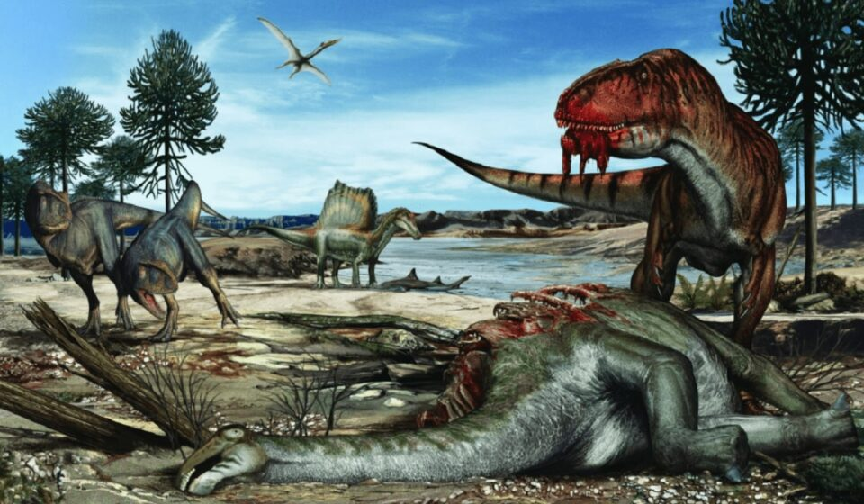

Cos'era l'Allosauro?
L’Allosaurus era un dinosauro carnivoro appartenente al gruppo dei teropodi. Visse circa 155–145 milioni di anni fa, nel periodo Giurassico superiore. Era uno dei principali predatori del suo tempo.

L’Allosaurus era un dinosauro carnivoro appartenente al gruppo dei teropodi. Visse circa 155–145 milioni di anni fa, nel periodo Giurassico superiore. Era uno dei principali predatori del suo tempo.
Era lungo circa 8–10 metri e pesava fino a 2 tonnellate. Aveva un corpo snello ma muscoloso, con:
L’Allosaurus era carnivoro. Si nutriva di altri dinosauri, probabilmente:
È possibile che cacciasse in gruppo o si nutrisse anche di carcasse.
Viveva in ambienti con pianure, fiumi e foreste, ricchi di altri dinosauri soprattutto in quello che oggi è il territorio degli Stati Uniti, ma anche in Portogallo.